Manual (fixed or by weight and by total)
Manual (fixed or by weight and by total) shipping allows setting fixed fees or calculating fees by weight and by total to all pre-defined shipping methods.
To see an example of how this method can be applied to your store, please see the Example section below.
Define the manual shipping provider
Go to Configuration → Shipping → Shipping providers. The Shipping providers window will be displayed:
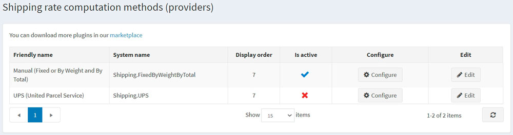
Enable the manual shipping rate computation method as follows:
- In the Manual (fixed or by weight and by total) row, click the Edit button.
- In the Is active column, select the checkbox.
- Click the Update button. The false option becomes true.
Click the Configure button beside the Manual (fixed or by weight and by total) option in the list.
You can switch Fixed rate shipping fee calculation to shipping By weight/total calculation by clicking the button at the top of the page.
Configure fixed rate
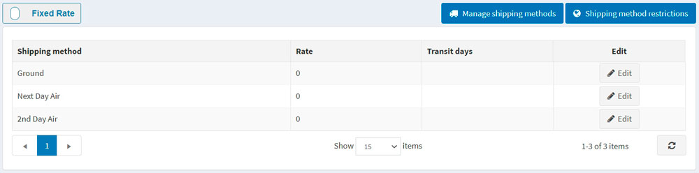
Click the Edit button beside a shipping method and enter the Rate and Transit days (if needed) for it.
Click Update.
Note
You can add/remove shipping methods in the Shipping methods window accessed by clicking and restrict some methods for chosen countries by clicking on the top.
Configure rate by weight/total
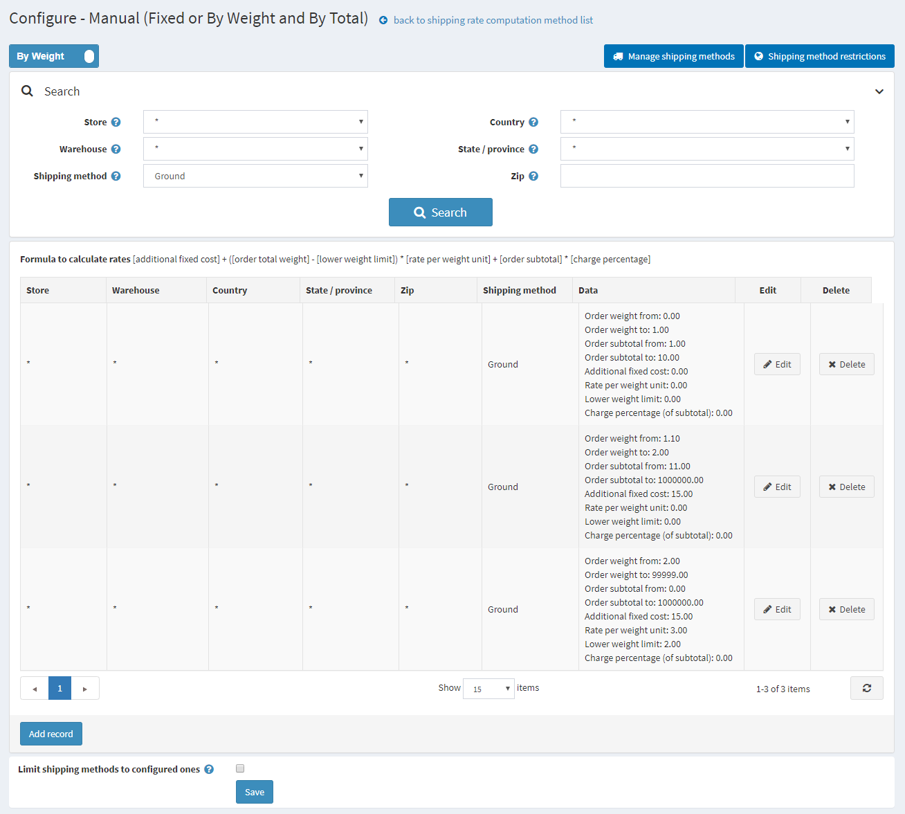
The shipping by weight and by total option allows setting different shipping fees based on a shipment's weight and total. The ability to charge different fees depending on the shipment's weight and total helps to keep a company's shipping costs down when heavy items are shipped yet offer reasonable shipping costs to customers who purchase light products.
Use formula [additional fixed cost] + ([order total weight] - [lower weight limit]) × [rate per weight unit] + [order subtotal] × [charge percentage] to calculate the fees, where:
- additional fixed cost is the cost of the shipment in case the weight is below a certain level (lower weight limit).
- rate per weight unit is the cost of each weight unit above the lower weight limit.
- order subtotal and charge percentage are parameters for calculating the extra cost based on the order subtotal.
For example, if you have the following shipping conditions:
- if the weight is 0 to 1 pound and the order subtotal is from $1 to $10, the cost is $10. You should create the following shipping rules:
- Order weight from: 0
- Order weight to: 1
- Order subtotal from: 1
- Order subtotal to: 10
- Additional fixed cost: 10
- Lower weight limit: 0
- Rate per weight unit: 0
- if the weight is 1.1 pounds to 2 pounds and the order subtotal is from $11 to $1000,000, the cost is $15. You should create the following shipping rules:
- Order weight from: 1.000
- Order weight to: 2
- Order subtotal from: 11
- Order subtotal to: 1000000
- Additional fixed cost: 15
- Lower weight limit: 0
- Rate per weight unit: 0
- over 2 pounds, the cost is $3 per each additional 0.5 pounds. You should create the following shipping rules:
- If your fixed cost is $15 the cost per pound over 2 pounds is $6
- Order weight from: 2.0001
- Order weight to: 99999
- Additional fixed cost: 15
- Lower weight limit: 2
- Rate per weight unit: 3
Note
An additional weight will be charged proportionally; for example, for 2.1 pounds, $15 + (0.1 * 6)= $15.6 will be charged
To add a new shipping rule, click Add record. The Add new record window will be displayed:
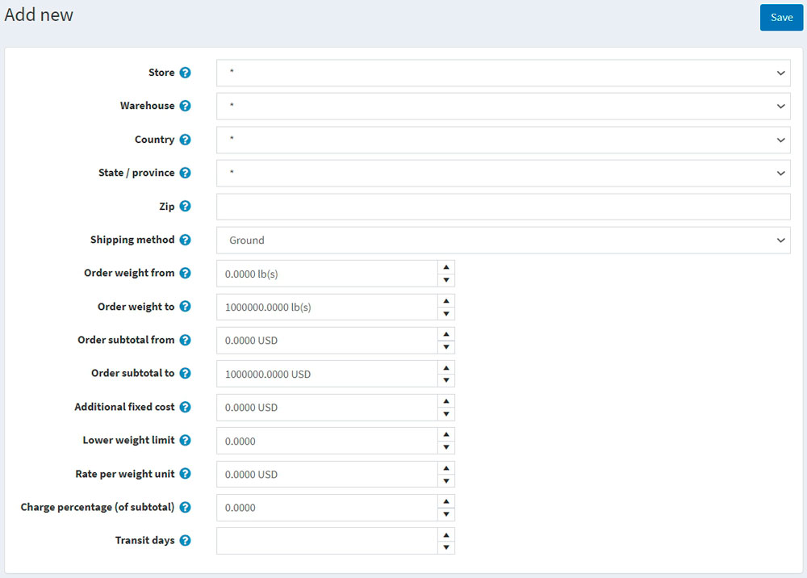
Define the following information:
- Store in which the calculated fees will be applied. Choose * to apply the rules to all stores.
- Warehouse from which the shipping will be done. Choose * to apply the rules to all warehouses.
- Country, State/province, Zip of a shipment destination.
- Select a Shipping method from the list of precreated options. Use Manage shipping methods on the top to add/remove shipping methods or proceed to the Configure shipping methods section to learn more.
- Create your weight configuration by filling the Order weight from and Order weight to fields. If the customer's shipment weight falls into this range, the additional cost will be fixed and calculated according to this record.
- Configure the pricing rules for this record using fields Order subtotal from, Order subtotal to, Additional fixed cost, Lower weight limit, Rate per weight unit, Charge percentage (of subtotal) fields.
- Define the Transit days field, which defines the number of days for delivery.
Note
Make sure that the setting Configuration → Settings → Shipping settings → Consider associated products dimensions and weight is true.
Click Save.
Note
If you wish to limit your customers only to methods configured on that screen select the Limit shipping methods to configured ones checkbox on the bottom of the page.
Configure shipping methods
A store owner can define the required shipping method list used in Manual (fixed or by weight and by total) provider. To manage shipping methods:
Go to Configuration → Shipping → Shipping providers. Then click the Configure button beside the Manual (fixed or by weight and by total) provider. The configuration window will be displayed:
Click Manage shipping methods; the Shipping methods window will be displayed:
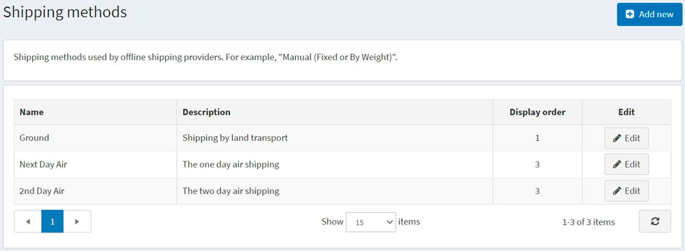
Click Add new button; the Add a new shipping method window will be displayed as follows:
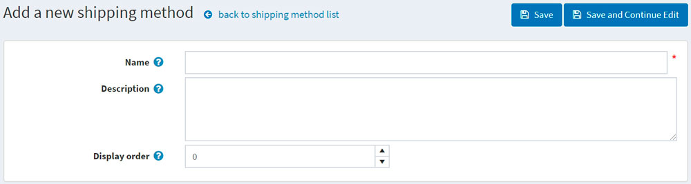
Define the following fields for a new record:
- Name of the shipping method seen by a customer.
- Description for the shipping method seen by a customer.
- Display order of the shipping method. A value of 1 represents the top of the list.
Click Save.
Note
You can click Edit in the Shipping methods window to edit existing shipping methods as described above.
Shipping method restrictions
A store owner can define restrictions for specific shipping methods in certain countries. To do so, go to Configuration → Shipping → Shipping providers. Click the Configure button beside the Manual (fixed or by weight and by total) provider. The configuration window will be displayed:
Click Shipping method restrictions; the Shipping method restrictions window will be displayed:
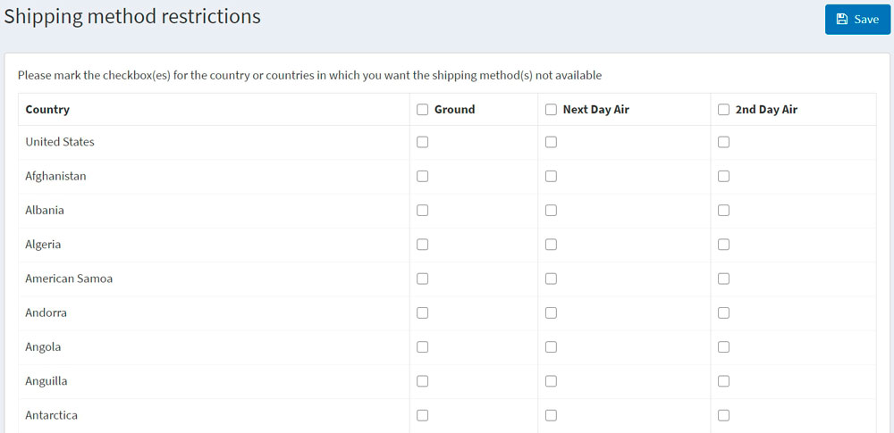
Select one or more of the shipping methods that you want to disable in certain countries.
If required, you can select the entire restriction column for all countries.
Click Save.
Example
Let's say you have a store located in the USA that ships within the USA and to Canada. You set up three shipping methods available:
- Ground that allows shipping by land transport.
- Next day air that provides one-day air shipping.
- 2nd day air allowing two-days air shipping.
Tip
You can add your own shipping methods by clicking the Manage shipping methods button on the Configure - Manual (Fixed or By Weight and By Total) page.
Then, let's say the shipping fee depends on the order total and shipping address. For example:
- If a customer pays $150 for their order, we provide free shipping by the Ground method within the USA only. If the order total is less than $150, we will charge $10. The delivery within the USA will take 5 days.
- For Canada, a customer should make an order worth $250 to have free shipping by the Ground method. If the order total is less than $250, we will charge $20. The delivery will take 7 days in this case.
- If a customer needs a Next day air delivery, it will cost $60 for the USA. Let's say you wish to disable the Next day air option for Canada.
- If a customer is ready to wait one more day, we suggest to use 2nd day air shipping, which costs $40 both for the USA and Canada.
Considering all the requirements above, we will set up the payment method on the Configure - Manual (Fixed or By Weight and By Total) page as follows:
Ground method 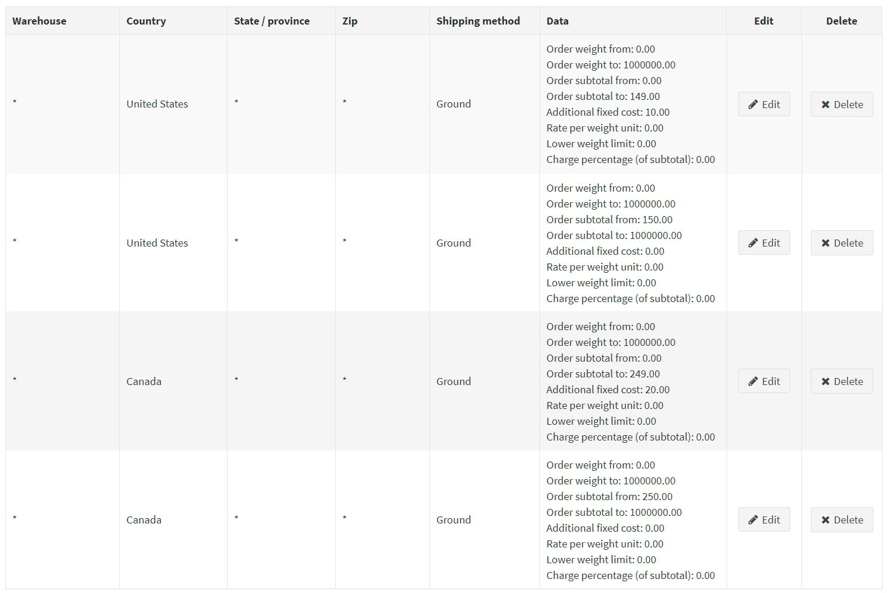
Next day air method 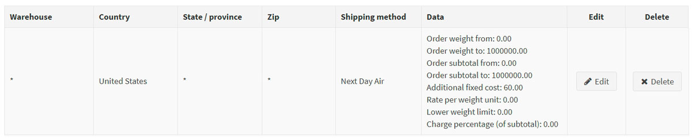
2nd day air method 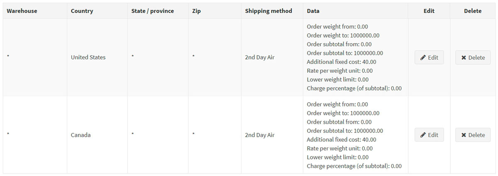
To disable the Next day air option for Canada, click the Shipping method restrictions button and fill the Shipping method restrictions as follows: 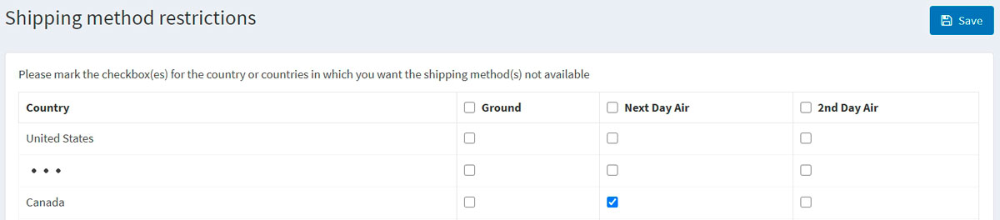
Let's see what the shipping options look like in the public store
Whenever a customer from the USA visits the product page (or shopping cart page), the shipping estimation will be displayed as follows:
Tip
By the way, you can disable shipping estimation by clearing the Estimate shipping enabled (cart page) and Estimate shipping enabled (product page) checkboxes on the Configuration → Settings → Shipping settings page.
When the customer proceeds for the shipping details, the following options will be displayed: 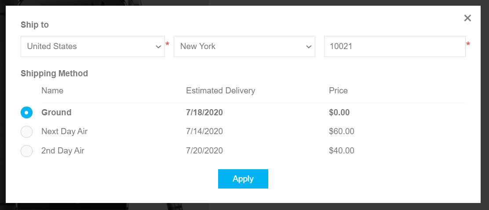
Whenever a customer chooses Canada from the shipping estimation window, the following options will be displayed: 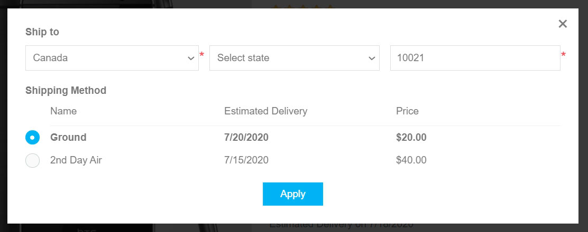 As you can see, the Next day air option is no longer available.
Tip
In case you want to provide pickup points to your customers, see how to set this up in the Pickup points chapter.